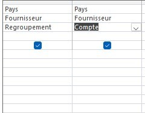

a. Combien y a-t-il des produits correspondants vendus 50€ ou plus ? On veut les connaître avec leur pays d’origine.
Il y a 8 produits de types desserts ou boissons vendus 50 euros ou plus:
Jus Kiwina - Royaume-Uni
Pimm' s jojo - Australia
Bratislava Vodka - Royaume-Uni
Rhönbräu Klosterbier - Allemagne
Côte de Blaye - France
Steeleye Stout - Etats-Unis
Sir Rodney's Marmalade Royaume Uni
Chang - Royaume-Uni
voici le code SQL:
SELECT p.NomProd, p.PrixUnit, f.NoFour, f.Societe, p.NoFour
FROM Fournisseur f
INNER JOIN Produit p ON f.NoFour = p.NoFour
WHERE p.PrixUnit >= 50
AND p.CodeCateg IN (1, 3);
b. Quels sont les pays de provenance de ces catégories ?
Les pays de provenance de ces catégories sont:
Allemagne
Australie
Bresil
Canada
Etats Unis
Finlande
France
Pays bas
Royaume uni
singapour
suède
voici le code SQL:
SELECT DISTINCT Fournisseur.Pays
FROM Fournisseur
INNER JOIN Produit ON Fournisseur.NoFour = Produit.NoFour
WHERE Produit.CodeCateg = 1 OR Produit.CodeCateg = 3;
c. On veut le chiffre d’affaire généré par catégorie desserts ou catégorie.
Le chiffre d’affaire est de 360 309,75 € pour les boissons, 207 326,70 € pour les desserts et au total de 567636.45€
voici le code SQL:
SELECT Categorie.NomCateg, SUM(DetailCommande.PrixUnitCli * DetailCommande.QteCom) AS ChiffreAffaire
FROM Categorie
INNER JOIN Produit ON Categorie.CodeCateg = Produit.CodeCateg
INNER JOIN DetailCommande ON Produit.RefProd = DetailCommande.RefProd
WHERE Categorie.NomCateg = 'Desserts' OR Categorie.NomCateg = 'Boissons'
GROUP BY Categorie.NomCateg;
2) KDou se demande ce qu’il faut changer dans son offre, voici quelques indicateurs ?
a) Donner des informations sur les fournisseurs qui proposent des produits qui ne sont pas commandés actuellement ?
On fait une requête de non-correspondance dans Access pour obtenir les produits non commandés pour les lier ensuite au fournisseur. On obtient donc cette table résultat donnant les informations des fournisseurs qui n'ont pas eu de commande sur certains produits :
Et ce code SQL :
SELECT Fournisseur.*
FROM Categorie
INNER JOIN (Fournisseur INNER JOIN (Produit LEFT JOIN DetailCommande ON Produit.[RefProd] =
DetailCommande.[RefProd]) ON Fournisseur.NoFour =
Produit.NoFour)
ON Categorie.CodeCateg = Produit.CodeCateg
WHERE DetailCommande.RefProd IS NULL;
b) Combien y–a-t-il de produits non commandés par catégorie ?
Pour obtenir le nombre de produits non commandés par catégorie, on utilise la même requête qu'avant mais en ajoutant la table catégorie avec quelques opérations ce qui donne le tableau suivant :
Avec la requête QBE suivante :
Et le code SQL ainsi obtenu :
SELECT Categorie.CodeCateg, Count(Categorie.CodeCateg) AS
CompteDeCodeCateg FROM Categorie INNER JOIN (Fournisseur
INNER JOIN (Produit LEFT JOIN DetailCommande ON
Produit.[RefProd] = DetailCommande.[RefProd]) ON
Fournisseur.NoFour = Produit.NoFour) ON Categorie.CodeCateg =
Produit.CodeCateg GROUP BY DetailCommande.RefProd,
Categorie.CodeCateg HAVING (((DetailCommande.RefProd) Is
Null));
c) Quels sont les pays qui ont une offre importante de produit ?
Pour cette question il suffit simplement de regrouper les pays avec les noms semblables pour voir lesquels sont les plus nombreux, on obtient ainsi ce tableau :
Avec cette requête QBE :

Et donc ce code SQL :
SELECT Fournisseur.Pays, Count(Fournisseur.Pays) AS
CompteDePays FROM Fournisseur GROUP BY Fournisseur.Pays;
Mais évidemment à cause de la mauvaise qualité de la base de données, on voit que certains pays ont 2 lignes au lieu d'une. Comme ça la réponse serait donc : France. Cependant, en essayant de combiner les pays, on trouve que les Etats-Unis et l'Australie ont des offres aussi importantes que la France. Avec le tableau corrigé, on a donc :
Pays
Offre
Australia
4
Etats Unis
4
France
4
Allemagne
3
Brésil
3
Canada
3
Italie
2
Japon
2
Suède
2
Royaume Uni
2
Norvège
1
Pays-Bas
1
Danemark
1
Espagne
1
Finlande
1
Singapour
1
3) KDou étudie les provenances de ses produits :
a) Pour l’Allemagne pays proche, quels sont les desserts ou boissons vendus à moins de 100 euros ?
Pour obtenir les boissons et les desserts venant d’Allemagne à moins de 100 euros, on fait la requête SQL suivante :
SELECT Produit.NomProd
FROM Fournisseur INNER JOIN (Categorie INNER JOIN
Produit ON Categorie.CodeCateg = Produit.CodeCateg) ON
Fournisseur.NoFour = Produit.NoFour
WHERE (((Categorie.NomCateg)="Boissons" Or
(Categorie.NomCateg)="Desserts") AND
((Fournisseur.Pays)="Allemagne") AND
((Produit.PrixUnit)<100));
Afin d’obtenir le tableau résultat suivant :
b) Quels fournisseurs vendent uniquement des boissons ou des desserts ?
Pour obtenir les fournisseurs ne produisant que des boissons et des desserts, on utilise une requête avec un -, afin d’obtenir le tableau résultat :
SELECT F.Societe, F.NoFour
FROM Fournisseur AS F
WHERE F.NoFour NOT IN (
SELECT F.NoFour
FROM Fournisseur F INNER JOIN (Categorie INNER JOIN
Produit P ON Categorie.CodeCateg=P.CodeCateg) ON
F.NoFour=P.NoFour
WHERE NOT (Categorie.NomCateg="Boissons") AND NOT
(Categorie.NomCateg="Desserts"));
c) Y en a-t-il qui vendent les deux boissons et desserts ?
La question est posée de manière ambiguë, en effet on ne
sait pas si on doit vérifier s' il y a des fournisseurs qui vendent
uniquement boisson et dessert en même temps ou si on doit
donner tous les fournisseurs vendant les 2 en même temps et
aussi éventuellement d’autre chose.
On vas ici repondre a la 2eme interprétation avec cette
requête SQL :
SELECT DISTINCT F.NoFour, F.Societe
FROM Fournisseur AS F INNER JOIN (Categorie INNER JOIN
Produit AS P ON Categorie.CodeCateg=P.CodeCateg) ON
F.NoFour=P.NoFour
WHERE Categorie.NomCateg="Boissons" AND F.NoFour IN
(SELECT F.NoFour
FROM Fournisseur F INNER JOIN (Categorie INNER JOIN
Produit P ON Categorie.CodeCateg=P.CodeCateg) ON
F.NoFour=P.NoFour
WHERE Categorie.NomCateg="Desserts");
avec donc le resultat suivant :
Dans les 2 interprétation la réponse est de toute façon oui
mais le tableau résultat n’est pas le même.
4) KDou étudie ses clients et les remises accordées :
a) Un client nantais Le verre à soi souhaite savoir quels autres clients nantais
commandent aussi des produits en Allemagne pour envisager de futures livraisons
groupées.
On écrit la sql de cette manière en choisissant les tables et en
les joignant ensemble afin d’appliquer les filtres de sélection.
SELECT DISTINCT Client.VilleCli, Client.CodeCli, Fournisseur.Pays, Client.ContactCli
FROM Client INNER JOIN (Commande INNER JOIN (Fournisseur INNER JOIN (Produit INNER JOIN DetailCommande
ON Produit.RefProd = DetailCommande.RefProd) ON Fournisseur.NoFour = Produit.NoFour)
ON Commande.NoCom = DetailCommande.NoCom) ON Client.CodeCli = Commande.CodeCli
WHERE ((Client.VilleCli)="Nantes") AND ((Fournisseur.Pays)="Allemagne"));
On obtient cette liste, il s’agit des clients nantais qui
commandent aussi des produits en Allemagne.
b) Quels sont couples de clients de Besançon pourrait on créer ?
Pour faire le couple on prend les ContactCli qui sont a
Client.VilleCli = “Besançon” ce qui nous donne Amaya Christo
et Kevin Festhéo.
Donc Besançon pourrait créer le couple Amaya Christo et
Kevin Festhéo.
D’ailleur il y avais une erreur, sur l’un des Besançon il n’y avait
pas “ç” mais “c”
SELECT Client.ContactCli, Client.VilleCli
FROM Client
WHERE Client.VilleCli = "Besançon"
c) Certains clients n’ont jamais eu la remise la plus importante de 25%. Qui sont-ils ?
Quand on prends les codes clients qui ont tout sauf 25%de
réductions on tombe sur une grande liste (photo de gauche)
si on prends juste les noms pour éviter les doublons, on
obtient une liste plus courte (photo de droite)
SELECT DISTINCT C.CodeCli
FROM (Client AS C INNER JOIN Commande CO ON C.CodeCli = CO.CodeCli)
INNER JOIN DetailCommande D ON CO.NoCom = D.NoCom
WHERE NOT (D.Remise) = 0.25;
d) Quels produits n’ont eu que des remises de 10% ou 20% ou pas de remise ?
Les Produits qui ont recu que des remises sont les suivants
SELECT DISTINCT P.RefProd, P.nomProd
FROM Produit AS P INNER JOIN DetailCommande AS DC ON P.RefProd = DC.RefProd
WHERE ((DC.Remise) IN (0,0.1,0.2))
GROUP BY P.RefProd, P.nomProd, DC.Remise;
II) Proposition d’indicateurs
1) Basile
Cette requête permet à KDou d'identifier les produits locaux afin
de réduire son empreinte carbone liée aux importations lointaines.
Cela favorise également les fournisseurs locaux, renforçant ainsi la
durabilité de la chaîne d'approvisionnement tout en proposant
une offre optimisée.
SELECT Produit.NomProd, Produit.PrixUnit, Produit.UniteStock,
Fournisseur.Societe, Fournisseur.Pays
FROM Produit
INNER JOIN Fournisseur ON Produit.NoFour = Fournisseur.NoFour
WHERE Fournisseur.Pays = 'France';
2) Nicolas
Pour essayer d’optimiser l’offre on regarde les produits les plus
commandés pour en
suite voir quel fournisseur les produit, on saura donc quel
fournisseur a les produits les plus populaires.
Avec une meilleure offre sur les produits tendance KDou pourra
avoir un meilleur chiffre d'affaires en effectuant plus de vente sur
les produits très demandés. Ces produits pourraient donc être
davantage mis en avant comme étant les meilleurs pour booster
encore davantage leur popularité et faire un très bon bénéfice.
Ainsi on fait la requête SQL suivante :
SELECT Produit.NomProd, Count(Produit.RefProd) AS
CompteDeRefProd, Fournisseur.NoFour, Fournisseur.Societe,
Fournisseur.Contact, Fournisseur.Adresse
FROM (Fournisseur INNER JOIN Produit ON Fournisseur.NoFour =
Produit.NoFour) INNER JOIN DetailCommande ON
Produit.RefProd = DetailCommande.RefProd
GROUP BY DetailCommande.RefProd, Produit.RefProd,
Produit.NomProd, Produit.NoFour, Fournisseur.NoFour,
Fournisseur.Societe, Fournisseur.Contact, Fournisseur.Adresse
ORDER BY Count(Produit.RefProd) DESC;
Pour obtenir ce tableau :
On sait donc maintenant les fournisseur avec des produit
populaire sont. avec leur produit :
Gai pâturage, avec la Raclette Courdavault
Refrescos Americanas LTDA, avec le Guaraná Fantástica
Formaggi Fortini s.r.l avec leur Gorgonzola Telino
3) Florian
L’idée de ma requête est de voir le nom des clients et le nom de
leur entreprise ainsi que l’argent qu’ils dépensent pour Kadou. Ça
permet à Kadou de voir ses clients les plus dépensiers et ainsi avoir
un ordre d’idée des montants qu’ils apportent à l’entreprise. Voici
la requête sql ainsi que le tableau obtenu
SELECT c.ContactCli AS "Nom du Client", c.SocieteCli AS "Société",
ROUND(SUM(dc.QteCom * dc.PrixUnitCli * (1 - dc.Remise)), 2) AS "Total des Commandes (€)"
FROM (Client AS c
INNER JOIN Commande AS co ON c.CodeCli = co.CodeCli)
INNER JOIN DetailCommande AS dc ON co.NoCom = dc.NoCom
GROUP BY c.ContactCli, c.SocieteCli
ORDER BY ROUND(SUM(dc.QteCom * dc.PrixUnitCli * (1 - dc.Remise)), 2) DESC;